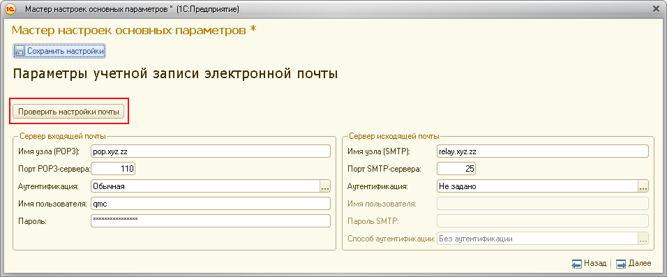

ЦКК - основной контрольный инструмент, позволяющий следить за качеством работы информационной системы. Однако, в том случае, если ЦКК сам окажется неработоспособен, информация о качестве работы информационной системы не будет собираться и обрабатываться. Для предотвращения таких ситуаций можно использовать данную контрольную процедуру. Внешний контроль ЦКК - это контрольная процедура, благодаря которой можно оперативно обнаруживать проблемы, связанные с работоспособностью внешних (по отношению к данному) ЦКК.
При работе контрольной процедуры программа выполняет поиск электронных писем с информацией от работе контролируемых ЦКК по электронному почтовому адресу, указанному при первоначальной настройке ЦКК. В случае, если нужных писем не обнаружено, программа считает, что работоспособность контролируемого ЦКК нарушена и извещает ответственных за разбор проблем.
Для работы контрольной процедуры нужно в контролируемом ЦКК включить отправку отчётов о работоспособности,
а в контролирующем ЦКК перейти в режим приёма сообщений от других ЦКК.

Также в контролируемом и контролирующем ЦКК должны быть верно заполнены настройки учётной записи почты.

ВНИМАНИЕ! Настройки учётной записи почты контролирующего ЦКК должны соответствовать почтовому адресу, определённому в поле "Почтовый адрес для приёма". В противном случае контрольная процедура будет выдавать неверные результаты.